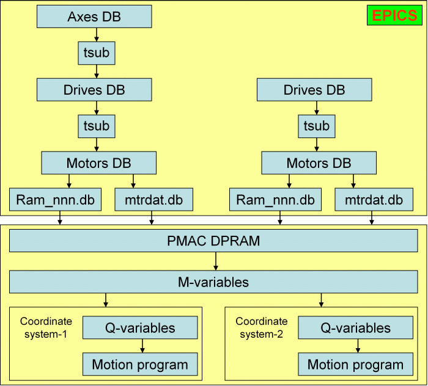
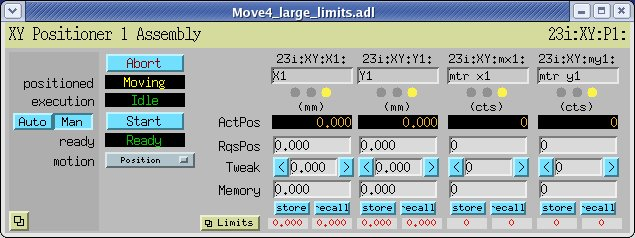

synApps: tpmac
Module Owners: Oleg Makarov and Sergey Stepanov, Argonne National Laboratory
This page is the home of tpmac.
tpmac supports Turbo PMAC2-VME Ultralite by
Delta Tau which is a
programmable 32-axis motion controller. Some features of it are:
- capability to perform synchronous coordinated motions of several drives
thus allowing for fast on-the-fly scans of motor groups,
- modular design with fiber link greatly simplifying cabling (Fig.1),
- capability to drive virtually any type of motors -- DC brush & DC
brushless servo, stepper, piezo, and etc.
- provisions to write custom motion programs, define custom servo cycles
and generally tweak any motion parameter.
- programmable I/O for synchronizing motions with external devices.

Figure 1: Layout of Turbo PMAC2-VME Ultralite with remote MACRO stations
The module consists of:
- PMAC ASCII (PMAC mailbox) driver support for ai, ao, bi, bo, longin, longout,
mbbi, mbbo, stringin, and stringout records. This provides the basic functionality
of PMAC console. In principle, just one DB file pmacApp/Db/pmacDb/AsciiPmac_basic.db
will be enough to start communicating with PMAC. However, such a communication
will obviously be not fast enough to gain the full functionality of PMAC.
- PMAC DPRAM (dual ported RAM) driver support for ai, ao, bi, bo, longin,
longout, mbbi, mbbo, and status records. This provides fast communications
with PMAC, but the DPRAM must be properly configured (mapped) so that the
EPICS databases access required PMAC parameters.
- Status record with PMAC DPRAM driver support. This is used for decoding
PMAC servo status bits.
- Tsub record -- a soft record not communicating with any hardware (i.e.
strictly speaking it is not directly related to PMAC). In this module tsub
records are used to perform transformations between coordinates on
combined motion axes (e.g. monochromator energy or mirror angle) and
individual drives (e.g. monochromator rotary or mirror support). Each
instance of Tsub record must be supplied with a transformation routine which
is a small program written in C and performing the transformations. See
examples in pmacApp/tsubSrc.
- Extensive set of EPICS databases consisting of files in pmacApp/Db/pmacDb
(the databases directly communicating with PMAC console or DPRAM), files in
pmacApp/Db/softDb (generic soft databases for all types of PMAC coordinate
systems), and files in pmacApp/Db/csDb, hsDb, mdDb, miDb, moDb, tbDb, xyDb
(soft databases per each type of PMAC coordinate system). The databases
constitute quite essential part of the module -- one can expect loading about
100 EPICS DB records per PMAC motion axis. Due to the complexity and
flexibility of PMAC where one deals with coordinated motions of 1,2,3,4,...
and etc. motors a generic solution like
Motor
Record used with the OMS-58 controller would not be able to access much of
PMAC functionality.
- PMAC motion programs and example PMAC configuration files (see the
"pmc" directory).
- MEDM screens (see the "adl" directory). The MEDM screens can be called from
a root GUI written in Tcl.Tk (see the "GUI_controls" folder).
Databases and how it works
A schematic of operating PMAC controller with EPICS DPRAM driver and databases
is shown on Fig.2.

Figure 2: Operation of EPICS databases with PMAC DPRAM driver.
The final goal is to execute PMAC motion program on a coordinate system
(see the examples of motion programs in pmc/3_motion-prg/). Several motion
programs (Slew, Position and Backlash) are provided with this distribution and
more can be added. Each motion program takes its parameters (like motors
destinations and assembly acceleration time) from the Q70-Q80 variables that
are available in PMAC for every coordinate system. In the their turn
Q-variables are mapped to a global set of M-variables that point to the
locations of PMAC DPRAM accessible by EPICS databases via the DPRAM driver
(see the files 2_m3300_xxx.pmc and 3_q70_xxx.pmc in the
pmc/2_ioc-specific/xxx directories).
On the EPICS side, the requested motors positions and other motion
parameters are copied to the DPRAM with the help of Ram_nnn.db
databases (see the pmacApp/Db/pmacDb/ directory) using the DPRAM driver in
their device support. In the inverse direction the motors encoders data
reported by PMAC are read with the help of mtrdat.db that contains
status records with the DPRAM driver in their DTYP field.
PMAC controllers communicate motors data in raw units like steps or encoder
pulses. Therefore, on top of "motors" databases another EPICS database layer is
built called "drives". The positions of "drives" are in engineering units and
typical relations between motors and drives are:
d = m * scale + offset
If a PMAC coordinate system provides any combined motion (e.g. a slit size
being determined by a combined motion of two jaws), then one more level is
added called "axes". Both "drives" and "axes" are all soft databases and they
are linked to each other and "motors" with the help of tsub records.
The relation between "drives" and "axes" is specific for an assembly and
requires a custom database and MEDM screen. If there are no combined motions,
then "axes" DB is not loaded and the database remains two-level as distinct
from the three-level one for combined motions. Both of these cases are
illustrated on Fig.2.
Fig.3 shows the MEDM screen for XY-positioner coordinate system which is a
two-level DB. Here "X1" and "Y1" are drives and "mtr x1" and "mtr y1" are
motors. Fig.4 presents the MEDM screen for a slit which is a tree-level
database. Here "Z-center" and "Z-size" are axes (combined motions), "Z-top"
and "Z-bottom" are drives, and "top" and "btm" are motors.

Figure 3: MEDM screen for XY-positioner (two independent drives with common
start and abort).

Figure 4: MEDM screen for collimator slits (two drives are combined to provide
slit center and size).
The coordinate system specific databases in pmacApp/Db/csDb, hsDb, mdDb,
miDb, moDb, tbDb, xyDb consist of the following parts:
- nn_Calibrate.db contain parameters (scale, offset, and etc.) for
linking "axes", "drives" and "motors".
- nn_Tsub.db performs recalculations between requested positions on
"axes", "drives" and "motors".
- nn_TsubRbk.db performs recalculations from actual positions on
"motors" to actual positions on "axes" and "drives".
- nn_LimAmp.db performs propagation of limit switch and amplifier
enable/disable signals from "motors" to "axes" and "drives".
- nn_TsubSpeed.db performs recalculations between motion speeds on
"axes", "drives" and "motors".
Those databases must be designed for any new type of motors assembly.
Where to find it
You can download the software from the links in the table below:
Required Modules
| Module Version |
Requires module |
Release needed |
Required for |
2-2 |
EPICS base |
3.14.4 |
Base support |
2-0 |
EPICS base |
3.13.7 |
Base support |
Installation and Building
After obtaining a copy of the distribution, it must be installed
and built for use at your site. These steps only need to be
performed once for the site (unless versions of the module running
under different releases of EPICS and/or the other required modules
are needed).
- Create an installation directory for the module, usually this
will end with
.../synApps/
- Place the distribution file on top of this directory. Then issue the
command (Unix style):
unzip tpmacX-Y.zip
where X-Y is the release.
- This creates a <top> application.
.../synApps/tpmac/X-Y/
- Edit the config[ure]/RELEASE file and set the paths to
your installation of EPICS base.
- Run gnumake in the top level directory and check for
any compilation errors.
- Prepare PMAC I-, M-, and Q-variables, define coordinate systems and motion
programs. Also map your PMAC's dual-ported RAM as it will be accessed by EPICS
databases. Some examples of PMAC preparation files are given in the pmc
directory of this distribution. Then load and save all the settings in the
PMAC. This can be done by connecting PMAC serial port to a serial port of
Windows computer and using PMAC executable software (PEWIN32) by Delta Tau.
- Prepare PMAC-related EPICS databases. Some examples of PMAC databases
(slits, mirror support, monochromator energy, XY-positioner, 3-support table,
modular drive) are given in the pmacApp/Db directories. In the case you need
a new type of coordinated motion, you will have to design a new version of
the following files: nn_Calibrate.db nn_LimAmp.db, nn_Tsub.db, nn_TsubRbk.db,
nn_TsubSpeed.db and a new transformation routine pmacApp/tsubSrc/tsub_nn.c.
- Prepare IOC startup files to load all the necessary EPICS databases
interacting with PMAC -- see examples in the iocBoot/iocgmca1/st_pmac.cmd file
and iocBoot/iocgmca1/dbLoad directory.
- Please email Oleg Makarov or
Sergey Stepanov so that a
record can be kept of which sites are using this software.
In Use
This software was derived from the EPICS support for PMAC1
motion controllers originally developed by Thomas Coleman at Argonne National Lab
and successfully used for a number of years by both SBC and BIO CATs at the APS.
The tpmac is in use at all three GM/CA CAT beamlines at the APS.
From two to three PMAC2-VME cards per one beamline provide controls for all
GM/CA CAT motors.
Please email any comments and bug reports to Oleg
Makarov (PMAC drivers and PMAC configuration) or Sergey
Stepanov (PMAC databases).
More info